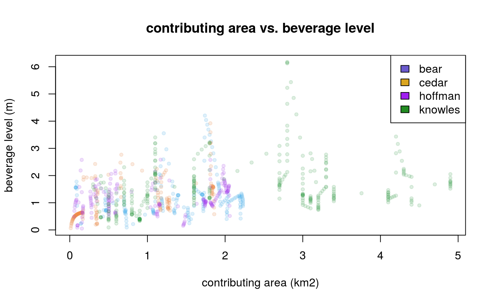
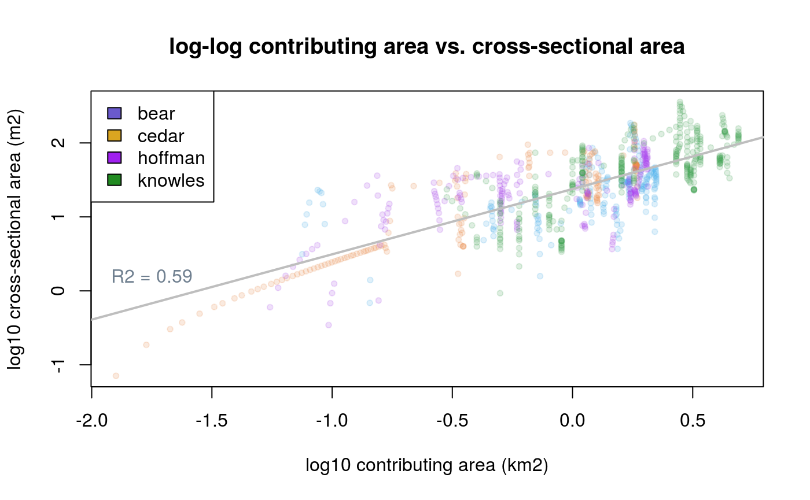
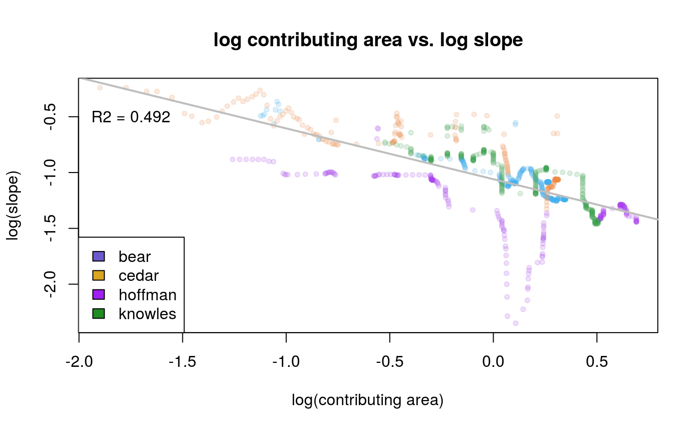
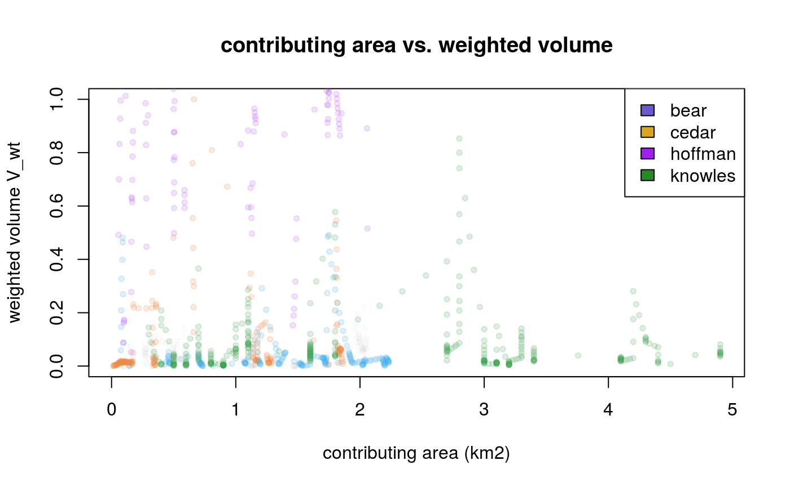
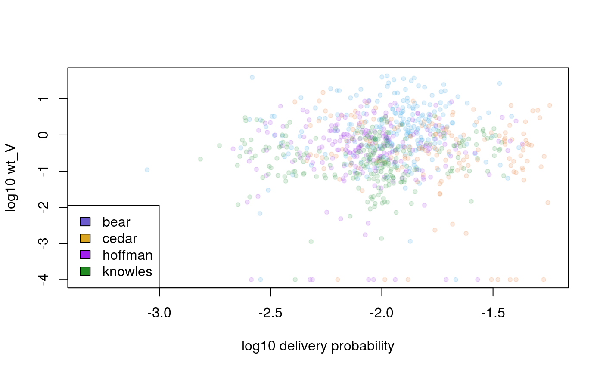

fall2019_update_2.RmdWhat I like to say when the ground gives way is that dirt moves around in a hurry of slurry, and where it shall stop is a point of inquiry.
With the output of the Miller/Burnett landslide model, we have an expected probability of debris flow delivery to different parts of a stream. From the Lancaster dataset, there are several points along the stream where we have measured the time before departure of deposits along the bank of the stream. And then from Lancaster’s transect surveys, we know the cross-sectional area of deposits along the stream between the valley walls, as well as the top width of the valley walls and the contributing area along the stream. By its nature, the transect survey records deposits that have arrived and not yet departed. We do not know how many deposits have arrived and departed prior, being washed away in stormflow or scoured out by another debris flow, so relating the transect record to a probability of debris flow arrival is problematic.
Knowing the volume of deposits between the valley walls does not tell us which deposits arrived by debris flows rather than fluvial processes. Generally speaking larger contributing area creates more potential for debris flows, but debris flows decrease as a stream decreases in slope and the valley walls widen. We would not expect an equal likelihood along the stream of deposit volumes consisting of debris flows.
As we wonder how to account for debris flow deliveries that have departed prior to measuring, it is useful to reflect on how they are departing. The erosive power of the stream depends upon a volume of water propelled by gravity, so lacking either water or gravity a deposit will squat where it is indefinitely. Where the slope is steep and water is plentiful, the stream has greater potential to evacuate debris from a deposit. We would not expect an equal likelihood of deposit duration along the stream, based on local variations in stream power. We would expect that as stream power increases, so does the likelihood of a deposit in the stream departing prior to measure.
The net effect of previous arrivals and departures leaves us with a record of volumes that is incomplete. When deposit volumes are high and delivery probabilities are high, this is as expected. When deposit volumes are low and delivery probabilities are low, this is also expected. But when deposit volumes are low and delivery probabilities are high, then our expectation is uncertain. If the stream power is more intense, we can reason that low volume does not necessarily imply lack of delivery, but there is no way to distinguish between places where the volume is low due to prior evacuation from places where it is low because no deposit arrived in the first place. We cannot classify these instances as either behaving as expected or unexpected without knowing which case applies.
Trying to wrap my head around the net effect of prior evacuations, I use the analogy of a teacup. The sides of the valley wall are the teacup, and deposit volumes within the valley are the tea in the cup. The erosive effect of the stream evacuating deposits is the guest drinking tea from the cup, and the surrounding hillslope is the benevolent host that occasionally refills the cup with tea.
The transect surveys record the sizes of teacups at the party and how much tea each contains. One might expect larger teacups to be more likely to contain more tea than smaller teacups, because they can hold more. On the other hand, one might consider it more remarkable to find a large volume of tea in a small cup, compared to finding the same amount of tea in a larger cup, because the smaller cup is fuller.
So what does the transect record tell us about delivery probability? How can we relate arrival probabilities to the record of deposits yet to depart, given the constraints mentioned above? The model I arrived at is named after the teacup analogy above as a pneumonic to help me remember the differt parts of the formula.
In the model, the teacup is cross-sectional area divided by valley width. This is the average depth of deposits; if you took all the dirt in the valley and stretched it evenly over a length equal to the valley width, it would come to this depth. Since the cross-sectional area is the tea, and the valley wall is the cup, dividing tea by cup gives us the beverage level. Bigger teacups need to be fuller to have the same beverage level as smaller teacups. As a waiter I used to roam my section of the restaurant monitoring beverage levels, looking to fill glasses that were less than half full, regardless of the size of the glass. In this case I do not know exactly how much tea each cup can hold, only the diameter of the cup, so I use the absolute beverage level in meters rather than percent fullness, like I used to do in my waiter days.
The next thing I imagine is a forearm and hand reaching down to take the handle of the teacup. Where the tea represents deposit volumes, the hillslope is the host reaching for the cup to refill it with tea. The second term in the model is for contributing area. So far, the tea in the cup represents all deposit types, not just debris flows. Based upon contributing area, I can weigh the importantance of deposit volumes, given their likelihood of being debris flows. I will go into more detail on the weighting function below.
Now imagine a pair of lips coming to the teacup to drink. Drinking the tea represents the power of the stream to evacuate debris. The streampower term in the model weights the importance of tea volumes based upon local variations in streampower. Where streampower is low, this term discounts high volumes, while high volumes in areas of high streampower receive more weight.
Let \(K\) represent the lips (streampower), \(V\) the beverage level (ave. volume depth), \(C\) the contributing hand (contributing area) and \(P\) the probability of the host refilling the teacup (debris flow delivery probalility). We can represent the relationship between an optimized delivery probability \(P_O\) and MB delivery probabilities \(P\) using a weighting term \(V_{wt}\) so that:
\[ V_{wt} = P \cdot K \cdot V \cdot C \] \[ P_O = P \cdot V_{wt} \]
The following code computes the \(V\) term, which I have nick-named ‘beverage level’:
library(muddier)
library(sp)
trunc_creeks <- creeks[creeks$xsec_area > 0,]
bev_lev <- trunc_creeks$xsec_area / trunc_creeks$valley_width
summary(bev_lev)
#> Min. 1st Qu. Median Mean 3rd Qu. Max.
#> 0.05286 0.79289 1.18402 1.33224 1.63875 6.17465
The following code computes the \(C\) term in the model.
log10_xsec_area <- log10(trunc_creeks$xsec_area)
log10_contr_area <- log10(trunc_creeks$contr_area)
loglog_xsec_contr <- lm(log10_xsec_area ~ log10_contr_area)
loglog_xsec_contr_theta <- loglog_xsec_contr$coefficients[2]
summary(loglog_xsec_contr)
#>
#> Call:
#> lm(formula = log10_xsec_area ~ log10_contr_area)
#>
#> Residuals:
#> Min 1Q Median 3Q Max
#> -1.14267 -0.20757 -0.01496 0.22019 0.92245
#>
#> Coefficients:
#> Estimate Std. Error t value Pr(>|t|)
#> (Intercept) 1.37689 0.01170 117.7 <2e-16 ***
#> log10_contr_area 0.88278 0.02515 35.1 <2e-16 ***
#> ---
#> Signif. codes: 0 '***' 0.001 '**' 0.01 '*' 0.05 '.' 0.1 ' ' 1
#>
#> Residual standard error: 0.3422 on 854 degrees of freedom
#> Multiple R-squared: 0.5906, Adjusted R-squared: 0.5901
#> F-statistic: 1232 on 1 and 854 DF, p-value: < 2.2e-16
log10_contr_coefs <- log10_xsec_area - loglog_xsec_contr_theta * log10_contr_area
contr_coefs <- 10^log10_contr_coefs
norm_contr_coefs <- contr_coefs / max(contr_coefs)The following code computes the \(K\) term of the model.
We can fit the area-slope relation to a power law where slope \(S\) relates to contributing area \(A\) by the function:
\[ S = k_sA^{-\theta} \]
We can relate logged slope to logged contributing area using a linear model, so that:
\[ log(S) = log(k_sA^{-\theta}) \] \[ log(S) = log(k_s) - \theta log(A) \]
where \(\theta\) is the slope of a linear model with intercept \(log(k_s)\). Using the estimated \(\theta\) for all surveyed creeks, we can back-calculate an individual \(k_s\) for each channel node holding \(\theta\) constant.
library(magrittr)
# find ks values in S = ks(A^theta)
lslope <- (trunc_creeks$GRADIENT+.015) %>% log10 # log slope with offset for negative grads
lcontr <- log10_contr_area # log contr area
as_mod <- lm(lslope ~ lcontr) # fit AS to power law
as_theta <- as_mod$coefficients[2] # pull theta value
sum_mod <- summary(as_mod)
# estimate individual ks values using pulled theta
log_ks <- lslope - as_theta * lcontr
ks <- 10^log_ks
norm_ks <- ks / max(ks)vol_wt <- norm_ks * bev_lev * norm_contr_coefs
vol_wt <- vol_wt / max(vol_wt)
p_o <- trunc_creeks$DebrisFlow * vol_wt
Optimizing our indicator of delivery probability is not so much a matter of declaring the MB probabilities we have good or bad, as it is how much we can improve them given the additional data we have. To carry forward the tea analogy all the way to the end, imagine the mountain valley is a tea shop. The streams have been divided into tables for guests as wide as the stream and either 10 meters long or 14 meters long for the extra large booths. Each table holds different sized tea cups, depending on the valley width. The manager assigns a server to pour tea into the cups for guests to drink. Back in the kitchen, the cooks brew big pots of tea for the servers to draw from for the guests.
The shrewd manager is trying to project how much tea the cooks need to brew each night, in order to avoid either running out of tea or brewing too much, but the manager does not know how many guests are going to check in because the tea shop does not take reserversations. Previously, the manager had been using the average tea sales for that night, but recently got the clever idea to predict variations from average tea sales based upon the laziness or assertiveness of the server.
A lazy server will fail to refill teacups for guests, even when the guest is thirsty and wants more tea, reducing sales. An attentive server will refill teacups when guests want more, increasing sales efficiently. An overly pushy server will keep offering to refill teacups when guests are not thirsty, exerting additional effort without increasing sales.
As an example, I used to wait tables on a cruise ship that did circles around Elliot Bay in Seattle. As a novelty, the bar sold plastic icecubes with colored LED light displays during the holiday season. One night I made a mocktail and added a single LED plastic icecube, and walked around the decks serving my section normally with the drink tagging along on my tray. By the first hour I had sold six, without having to say a word, with interested guests prompting me for a sale.
Seeing my gimmick, a fellow server swore immediately he would sell more fake icecubes than me, and returned from the bar with a garish stack of blinking and flashing icecubes, looking more like a merchant at a baseball stadium laden with wares than a server. He kept that up all night and sold far fewer than I. This ‘more is not always better’ philosophy may apply to the MB delivery probabilities, in the sense that once delivery probability gets sufficiently high, marginal increases provide diminishing returns, as the area is already likely to receive a debris flow.
Imagine if the manager ranked every server from lazy to pushy, and plotted them against the sales of each server. We would expect tea sales to increase as servers become less lazy, but then as servers become too pushy we would expect the increase to taper off.
Let \(P\) represent delivery probabilities, and let \(F_P (P_0)\) be the CDF of delivery probabilities. Let \(V\) represent depositional volume, and let \(F_V (P_0)\) be the CDF of volume with respect to \(P\). The volume weighting function \(wt_V\) over an interval \(P_i\) to \(P_{i + 1}\) along \(P\) is:
\[ wt_V (P_i, P_{i+1}) = \frac{F_V (P_{i+1}) - F_V (P_i)}{F_P (P_{i+1}) - F_P (P_i)} \]
Using \(K\) for the ratio of \(P/k_s\), let \(F_V(K_0)\) be the CDF of \(V\) with respect to \(P/k_s\). We can then compare change in the CDF of \(V\) to change in the CDF of \(K\). The volume weighting function \(wt_{V_K}\) over an interval \(K_i\) to \(K_{i + 1}\) along \(K\) is:
\[ wt_{V_K} (K_i, K_{i+1}) = \frac{F_V (K_{i+1}) - F_V (K_i)}{F_K (K_{i+1}) - F_K (K_i)} \]
# weighting function for delivery probs
# delivery prob index
p_index <- sort(trunc_creeks$DebrisFlow)
# cdf of delivery probs
p_cdf <- to_cdf(p_index/sum(p_index))
# change in delivery prob cdf per change in index
delta_p <- vector(length(p_index), mode = 'numeric')
for (i in 2:length(delta_p)) {
delta_p[i] <- p_cdf[i] - p_cdf[i-1]
}
# cdf of volume by prob index
v_cdf <- vector(length(p_index), mode = 'numeric')
for (i in 2:length(v_cdf)) {
v_cdf[i] <- sum(vol_wt[trunc_creeks$DebrisFlow <= p_index[i]]) /
sum(vol_wt)
}
# change in volume cdf per change in index
delta_v <- vector(length(p_index), mode = 'numeric')
for (i in 2:length(delta_v)) {
delta_v[i] <- v_cdf[i] - v_cdf[i-1]
}
# change in volume cdf per change in del prob cdf
p_wt <- delta_v / (delta_p + .0000000001)
log_pwt <- log10(p_wt + .0001)
log10_df <- log10(trunc_creeks$DebrisFlow)
bin_log_pwt <- bin_by(log10_df, log_pwt, 10)